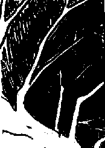

A World Community of Old Trees
Student Project
Josh
Chaos Series #1
Please print this image on your local printer, making your own variations and additions with whatever materials you like, or use Photoshop, then e-mail it back as an attachment with your favorite mail program - Josh

Please click on the links below to see the responses that have come in so far
Response 1
Sultan Zeyad, Ohio USA 1/23/00
 Return to Main Page
Return to Main Page
Comments
Please send e-mail to: June Julian jj68@nyu.edu
A World Community of Old Trees
© 1996, 1997, 1998, 1999, 2000 June Julian
All rights reserved.